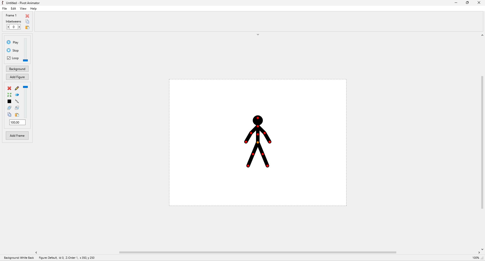

Wave hello 👋
Example: one arm moves side to side while the body stays still.
- Raise one arm.
- Add a frame.
- Rotate the forearm slightly.
- Add 6–10 more frames, alternating the hand position.
- Play and adjust the speed.
Bring stick figures to life! Learn one skill at a time, practise in Pivot Animator, then build your own mini animation.
This website is instructions only — create and save your work in Pivot Animator.Learning goal: I can position a figure, add frames, play my animation and save my work.
What is a frame? A frame is one still picture. Pivot plays many slightly different frames quickly to make movement appear. You must change the pose yourself — Pivot does not automatically fill in the movement.
This is the Pivot Animator window you will use. The example animations throughout this website use its red joint handles and orange centre/origin handle as their model.

Red dots: drag to pose head, arms and legs. Orange dot at the hips: drag to move the whole character. Add Frame: capture your next pose. Play: preview movement. The image is a reference only: the animations are made in the Pivot program, not on this website.
Tip: The faint previous pose (onion skin) helps you see where the figure was in the previous frame.
Example: one arm moves side to side while the body stays still.
Example: character waves, bends forward and returns upright.
Extension: Add a second figure waving back.
Learning goal: I can use a sequence of poses to animate walking, running and jumping.
Animation tip: Move arms and legs in opposite directions when walking. Use smaller changes between frames for smoother movement. Test your animation often.
Example: alternating leg positions and gradual movement to the right.
Example: bend knees, rise into the air, then land.
Extension: Jump over an obstacle and add a realistic landing pause.
Learning goal: I can animate two things moving in a coordinated sequence.
Planning tip: Decide what happens first, next and last. Move an object a little in each frame so it follows a believable path.
Example: leg swings, then ball travels away.
Example: ball follows repeated arcs and loses height.
Extension: Two figures pass the ball to each other, with a bounce between them.
Learning goal: I can plan, produce, test and improve an animation with a clear beginning, middle and ending.
Your mission: Create a short story using Pivot Animator. Aim for 5–10 seconds of clear action; quality matters more than length. You can use the ideas below or invent your own.
A character walks on screen, waves to a friend and walks away. Include at least two different movements.
A character runs, jumps over an obstacle and celebrates at the finish.
A ball escapes, bounces away and is caught by another character. Add multiple actions and realistic timing.
You do not have to complete all eight. Your teacher may set one, or you can choose an activity that matches your skill level. The first four lessons teach the basics; these are extra options and extension projects taken from the class worksheet.
Every task: plan → animate in Pivot → play and improve → save the editable .piv file → hand it in as directed. Choose suitable school-safe content.
.stk figure files or a folder on the S: drive. These files may not be installed on your computer. Ask your teacher for the class figure folder, or create equivalent figures yourself using File → Create Figure Type.Example: the character travels from a top icon to the bottom of the screen.
Save as: Full Name - Pivot Animation One.piv
Challenge: Make the character land and balance on an icon before moving again.
Example: a safe sequence of icon-to-icon jumps.
Save as: Full Name - Pivot Animation Two.piv
Challenge: Add three jumps with different heights and a controlled landing.
Example: car rises over a bump while its wheels rotate.
Save as: Full Name - Pivot Vehicle Animation.piv
Challenge: Add two uneven bumps with believable suspension movement.
Example: letters enter one at a time.
Save as: FirstNameAnimateName.piv (worksheet example: rudyanimatename).
Challenge: Make the letters bounce before settling.
Example: arms and legs alternate as the figure climbs.
Save as: FirstNameLadderClimb.piv (worksheet example: rudyladderclimb).
Challenge: Add a pause on each rung and a safe arrival at the top.
Example: colourful letters bounce into position.
Save as: FirstNameColorName.piv (worksheet example: rudycolorname).
Challenge: Add a coordinated colour pattern across all letters.
Example: a skater travels down a stair-side rail.
Save as: FirstNameSkaterGrind.piv (worksheet example: rudyskatergrind).
Challenge: Add a smooth approach, glide and controlled finish.
Example: a character arrives, meets someone and waves.
Story planner: Who are the characters? Where is it set? What goes wrong? How does it get solved?
Challenge: Use a background, two characters and a clear change between scenes.
Just starting? Finish Lesson 1's wave and Lesson 2's walk first. Then try Task 4 or 6 (animated name). Feeling confident? Try Tasks 1–2 (desktop jumps). Want a serious challenge? Try Tasks 3, 5, 7 or 8.
From the worksheet's marking guide: good work shows creativity, sustained effort, skill with Pivot and, for a story, a clear storyline. These are helpful quality targets, not a new graded task unless your teacher says otherwise.
Compare the last two frames. Reduce the distance between poses by inserting extra frames or moving the origin handle less each time.
Adjust the frame rate (FPS) near the playback controls. You can also add more frames to slow an action or remove frames to speed it up.
Select the figure and drag the joint handle at the end of the segment. Use the origin handle only when you want to move the entire figure.
Save your editable Pivot file as Year_Class_Name_Animation.piv in your teacher's nominated folder. Follow your teacher's instructions for submission.
Pivot Animator official website — information and software resources. Use your teacher-approved installation on school computers.
Curriculum focus: planning and creating digital solutions, sequencing, testing, evaluating and improving. This is an enrichment activity, not a separate graded assessment.